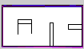

로그인
또는
얼굴 스캔 중...
계정관리 (관리자)
계정 생성
로봇암 현황
로봇암 연결 상태와 카메라, 기능 및 동작을 확인하고 제어합니다.
제어 대상
서버 확인 중
기능 상태 —
실시간 카메라
LIVE

비전 기능
공통 동작
왼팔 전용
오른팔 전용
듀얼암 동작
로봇팔 로그
로그를 불러오는 중입니다.
WaSaB · SCHOOL WORKMATE ROBOT
안녕하세요. 선생님.
오늘도 화이팅 해요~
운영 현황
실시간 위치맵

◇ 순찰 경로
로봇 현황
로봇팔 기능
선생님 보조
선생님 환영합니다.
가용 로봇 현황
대기위치 --
배터리
82%
위치
--
로봇
--
버튼 지시
모션 지시
인증 대기
제스처 —
☝️ 1개 = 추종 시작✌️ 2개 = 홈복귀
✊ 주먹 = 일시정지✋ 4개 = 인사
수업 동행 중
수업 동행 대기0.7m 유지
거리
0.7m
배터리
80%
위치
--
보조 활동
세션 마무리
선물주기
양팔의 선물주기 기능으로 학생에게 선물을 전달합니다.
- 양팔 선물 전달시작 명령을 기다리는 중
- 완료 후 대기대기
교보재 올리기
로봇이 한 팔로 트레이의 지구본을 선생님 탁자 위에 올립니다.
- 왼팔 Help 동작시작 명령을 기다리는 중
- 탁자 위에 내려놓기 (Place)대기
홈으로 복귀 중
도크까지 자율주행 후 정밀 정차합니다. 재측위·정밀주차는 자동으로 처리됩니다.
전방 카메라 · 도킹 중 ON
전방 ON
x=46.5cm y=-3.0cm yaw=-3.1°
AprilTag 정렬 중
이동(자율주행) 구간에서는 CPU 절약을 위해 전방 카메라를 끄고, 도킹 단계에서만 켭니다.
- 수업 동행 종료완료
- 도크까지 자율주행 (Nav2)도착
- 위치 보정 (AprilTag 재측위)보정 중…
- 정밀 정차 (도킹)대기
오늘의 활동
홈 복귀 완료
Pinky-31 · 교무실 도크
선물주기 · 3명
복도 A
호출 · 수업 동행 시작
김선생님
교내 순찰
순찰을 시작하면 로봇이 지정 경로를 순회합니다.
실시간 위치맵
◇ 순찰 경로
가용 로봇 현황
대기위치 --
배터리
--
위치
--
로봇
--
분리수거
왼팔의 분리수거 기능으로 물과 쓰레기를 알맞은 수거함에 넣습니다.
- 왼팔 Recycle 동작시작 명령을 기다리는 중
- 물체 분류 및 수거함 배치대기
지금 감지된 상황이 없어요. 아래는 예시 화면입니다.
화재 의심 감지
미처리ZoneE · 교무실 · CCTV-3심각도 높음
CCTV · 1차 감지
fire 0.88
천장 CCTV (topview)천장 카메라가 1차 감지한 장면입니다. 로봇을 보내 현장에서 다시 확인하세요.
진행 중인 출동이 없어요. 아래는 예시 화면입니다.
현장으로 이동 중
로봇이 ZoneE · 교무실의 nav2_approach 지점으로 자율주행하고 있습니다. (도킹 없음)
목표 nav2_approach · x=0.00m y=0.00m yaw=0°
로봇 전방 카메라
이동 중 카메라 꺼짐
CPU 절약을 위해 현장 도착 시 자동으로 켜집니다. 이동 경로는 천장 CCTV로 확인하세요.
- 출동 명령 수신ZoneE · 교무실
- nav2_approach 지점까지 자율주행 (Nav2)약 12m 남음…
- nav2_approach 도착 · 카메라 2차 검출대기
확인할 현장이 없어요. 아래는 예시 화면입니다.
현장 실시간 확인
전방 카메라 · nav2_approach 도착 시 ONLIVE · 로봇 현장
fire 0.91 · 2차확인
로봇 전방 카메라모든 선생님에게 실시간 공유 중. 화면을 보고 판단하세요.
조치
전파할 상황이 없어요. 아래는 예시 화면입니다.
교내 상황실 긴급 전파
현장 상황을 교내 상황실에 즉시 전파합니다. 외부 신고(119·112)는 상황실이 판단·수행합니다.
교내 상황실 긴급 호출
교내 유선 · 무전
현장 정보 전송
화재 · ZoneE · 교무실
교직원 전체 알림
앱 푸시 · 방송
권장 외부 신고 119 소방 — 상황실이 최종 판단·수행합니다.
이벤트 이력
화재 의심 · 종료
ZoneE · 교무실 · 오탐 확인
외부인 감지 · 종료
후문 · 방문객
화재 · 119 전파
급식실 · 훈련
알림
종합 이벤트
앱에서 발생한 활동을 최신순으로 기록합니다.
기간
~
로봇 관리
교내 전체 맵 위에 모든 로봇의 실시간 위치·상태가 표시됩니다.
3
전체
3
온라인
2
임무중
1
주의
실시간 위치맵
실시간 --:--:--
TOP / 전방 View
● LIVE
천장 카메라 실시간 영상 (연결 대기…)
교사 보조
순찰
대기
이벤트/정지
Pinky-31 · 수업 동행 중
복도 A · 김선생님 수업 동행
Pinky-50 · 순찰중
ZoneB · 교실1 · 경로 3/8
Pinky-87 · 대기
충전소 · 충전 권장